近期听了有收获有启发的 17 期播客单集
约斯特普通
2024-06-14
听播客是每天都在做的事情，早上起床后，开始做早饭的时候就会戴上耳机，打开手机里的小宇宙 app，选一期播客开启崭新的一天。
把近期听到的有启发和有收获的内容分享给大家，针对每期的内容做了很主观的分类，希望能让大家选择听某一期内容的时候能更快决策。
一、运动健康类
（3 期）
耐听是耐克的官方播客，有两位主播，每期嘉宾数量不等，本期内容重点科普赛龙舟这项目运动。
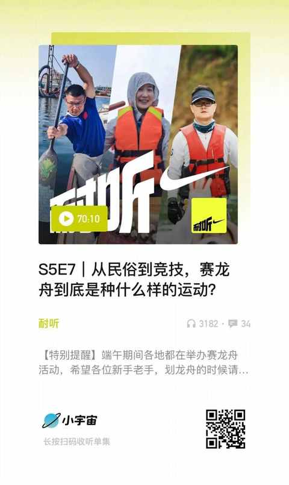
歌手辛晓琪提及了自己居家健身的一些 tips，基于严谨的考虑，后半部分有专业人士进行逐个解读。
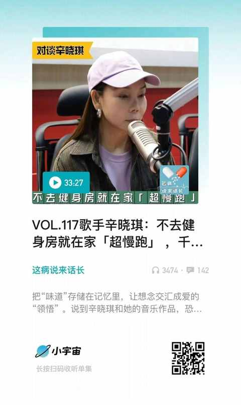
运动是为了健康，但同时也伴随着风险，特别是半马、全马、越野跑这种，如果参加比赛，量力而行就特别重要，有时候顶一顶可能就会让自己陷于比较大的风险之中，日常运动中也要注意规避风险。
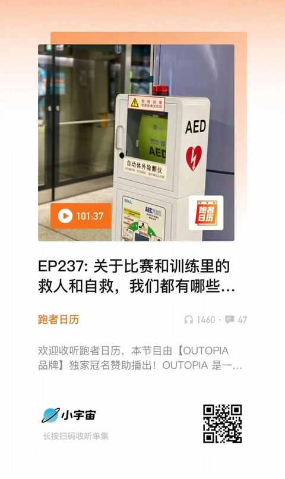
二、长见识系列
（ 3 期）
无聊斋应该是赚钱了吧，粉丝群里面都有真的在德国工作的骨科医生，嘉宾的分享很完整，从怎么去到德国当医生的过程，再到上班的体验，德国同事的特点等等。
卖私人飞机和卖豪车豪宅相比，可太不一样了。
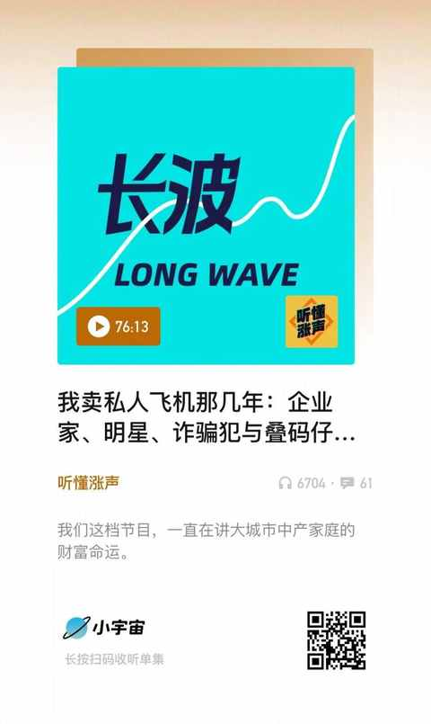
其中的故事均为粉丝投稿，还有一位投了两个稿子都被采纳的，不过最令人印象深刻的还是嘉宾自述自己柏拉图式网恋的经历
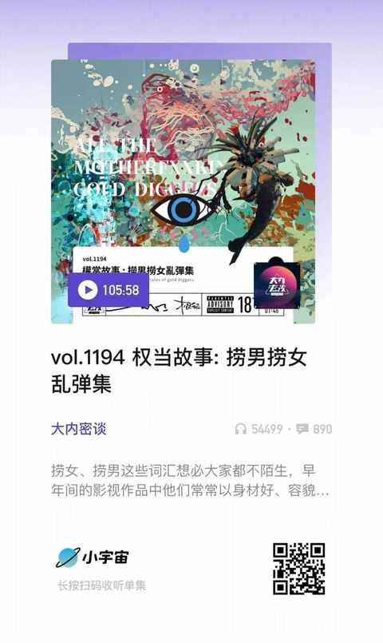
三、商业通识类
（4 期）
技术进度带来了信息量的倍增，世界也在加速进化，嘉宾给到的解法是：找到哪些东西是不变的，然后以不变应万变。
李宁和安踏都是国产运动品牌中的佼佼者，李宁刚开始是一骑绝尘，现在安踏已经是第一名，嘉宾详细讲述了两个品牌的发展历程。
红衣大叔在北京车展一天几个热搜，说要换车，多家车企直接把新车开到 360 楼下送给他免费用，虽然他没有驾照，但并不妨碍他又再次出圈。
绝对的头部网红小杨哥两兄弟的直播频次越来越低，但生意越做越大，业内人真诚的分享了其中的头头道道。
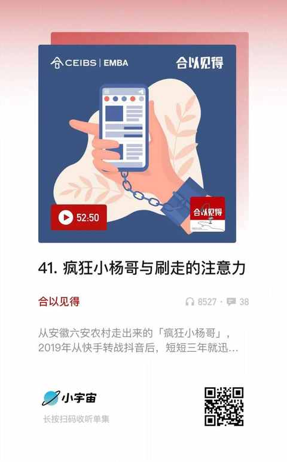
四、与作家对谈
（2 期）
许知远和主播一起聊梁启超的故事，进而聊到和他有关联的人和事……
鲁豫的播客和鲁豫的访谈节目完全不同，本期节目没有什么场面话，就是两个真诚人在真诚且热情的聊天。
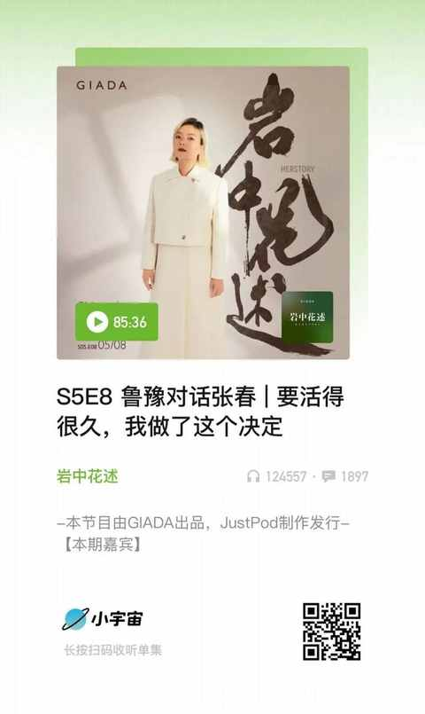
五、减少内耗类
（5 期）
听过太多人说：国人缺乏死亡教育，可是极少人会提出自己的方案，也没有看到关于死亡教育的完整定义，似乎提出这个问题就很厉害了，就可以了。 不妨静静地听本期嘉宾，也就是这位临终关怀医生的述说吧。
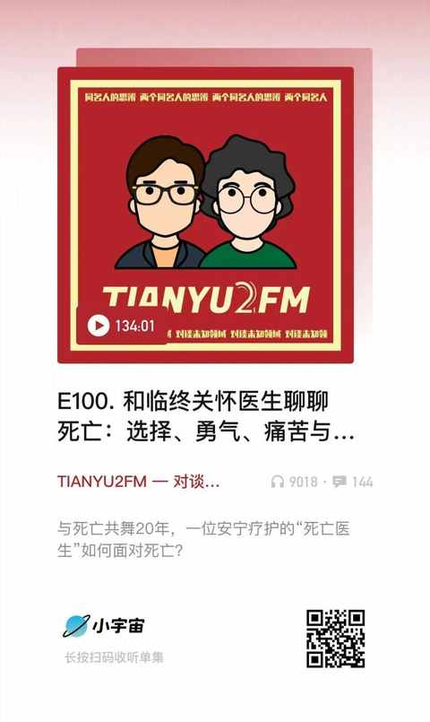
两位主播由鼹鼠的故事聊起，到最后聊到她们为什么会做这个播客和取这个名字，超级完整且自洽的心路历程，尤其喜欢本期的标题：做兴致勃勃的 i 人。
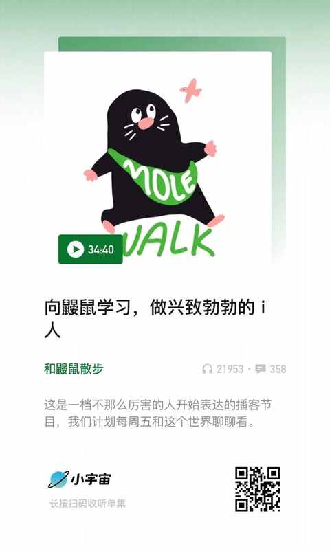
李诞分享这个话题可太合适了。 去做具体的事情，去做更深入点的思考能解不少毒
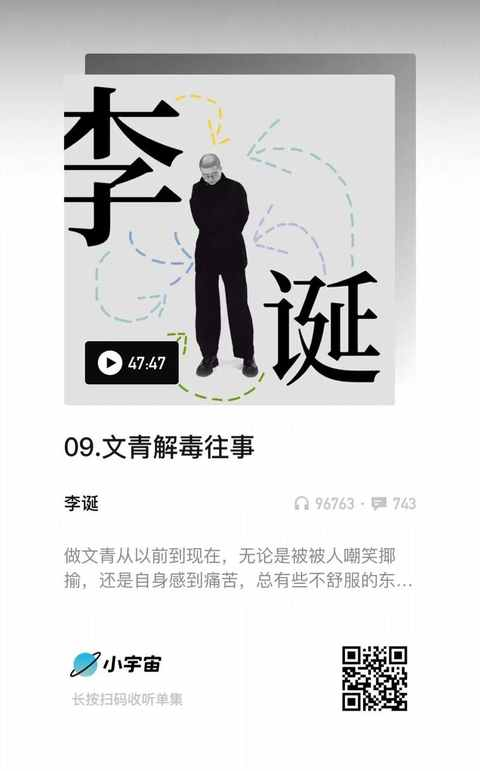
这是一期线下录制的播客，两位主播和现场的数位观众都分享了自己的开窍时刻，听他们分享完，你也能想到自己的开窍时刻和顿悟瞬间。
吵架就是情绪的发泄，吵架不是以理服人，吵架没有输赢…… 听完之后，我觉得我得定期听听这期节目，然后把其中一些内容去实践下
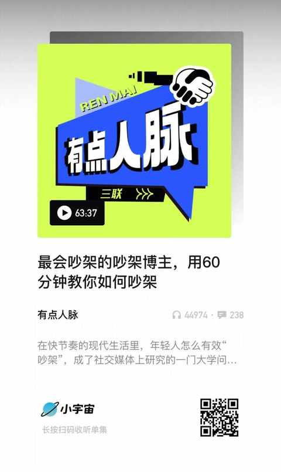